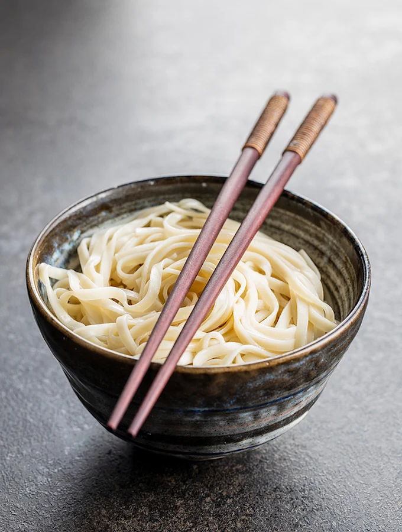

Udon

Udon are long, thick wheat noodles traditional to Japan and other Asian
countries. The shape and size of dried udon noodles are similar to
fettuccine, though they cook up to a plumper texture. Fresh udon are
rounder and plumper yet. In both cases, the smooth, pleasant texture of
these noodles makes them appealing and versatile.
According to some sources, udon noodles are believed to have originated in
China, perhaps in a form closer to a dumpling than a noodle. Other sources
cite Japan as their country of origin; this guide to udon dishes describes
lots of delicious ways in which they’re served in the many noodle shops
around the country. A third theory places udon noodles’ origin in Korea,
where they’re called Garak-Guksu. We’ll stay out of this debate; suffice
it to say that udon have been around for hundreds of years and are still a
beloved food in several Asian countries.
Ingredients:
- 2 packets udon noodles - total 13 oz vacuum packed noodles
-
2½ cups stir fry vegetables - chopped (I used mushrooms, bok choy,
onions)
- 2 stalks scallions - cut 2 inches long
- ½ lb ground meat - beef, chicken, turkey, pork, shrimp
- 1 Tablespoon avocado oil
- 2½ Tablespoons dark soy sauce
- 2 Tablespoons oyster sauce
- 1 Tablespoon mirin
- 2 teaspoons brown sugar
- ½ teaspoon rice wine vinegar
Instructions:
-
Sauce: Mix all the ingredients for the sauce in a small bowl and set
aside. 2½ Tablespoons dark soy sauce, 2 Tablespoons oyster sauce, 1
Tablespoon mirin, 2 teaspoons brown sugar, ½ teaspoon rice wine vinegar
Cook the Udon Noodles
-
Remove your udon noodles from its package and add it to a pot of boiling
water. Frozen udon noodles can be added directly to the pot of boiling
water. Stir gently until your udon noodles are separated and pliable.
This should take 1 - 2 minutes. They come precooked so avoid overcooking
them as they can get too soft. 2 packets udon noodles Rinse and drain
your noodles under cold water. If not using right away, drizzle on a
little bit of oil to keep them from sticking.
-
Heat your pan over high heat and add the oil. Add in the ground meat and
stir fry until almost cooked. Add the vegetables and stir fry until meat
is fully cooked and vegetables are soft. Next add in the noodles, sauce,
and scallions. Add less sauce if you prefer. Continue stir frying for
about 3 minutes or until well combined. Serve immediately. 2½ cups stir
fry vegetables, ½ lb ground meat, 1 Tablespoon avocado oil, 2 stalks
scallions